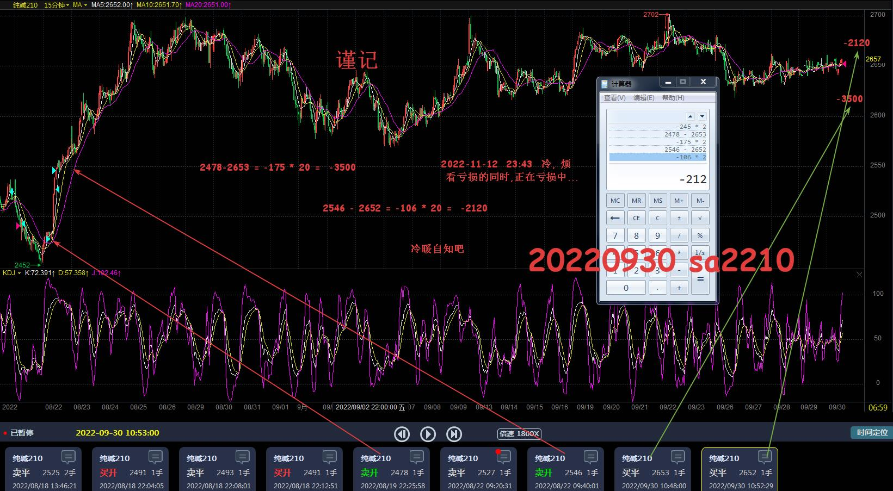
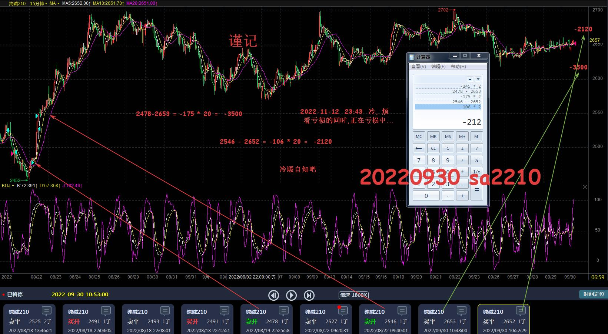

豆粕:
2301: 240-1730-3040+810-170
2303: 940
合计 = -2950
豆粕m2301
豆粕m2303
豆粕m2303
PP : 2301：100 + -135
合计 = -35
聚丙烯pp2301
纯碱2210 :720 (-2120 + -3500) =2211： 120
2301: -800 -2260
合计： = -7840
纯碱sa2210
 纯碱sa2211
纯碱sa2301
总合计： -2950-35-7840 = -10825 纯碱sa2211
纯碱sa2301